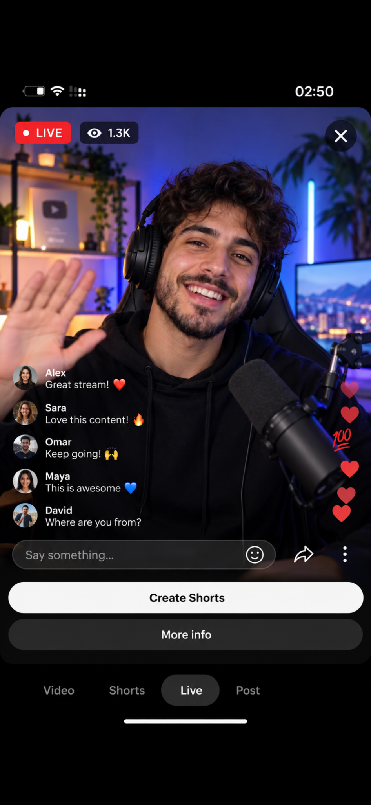
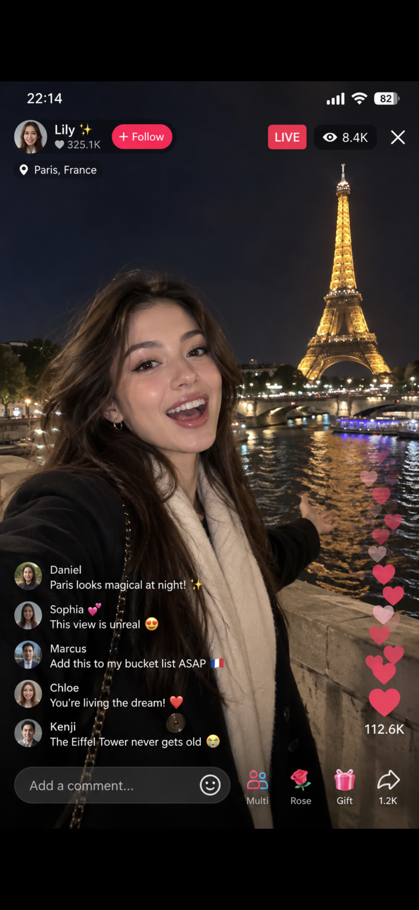
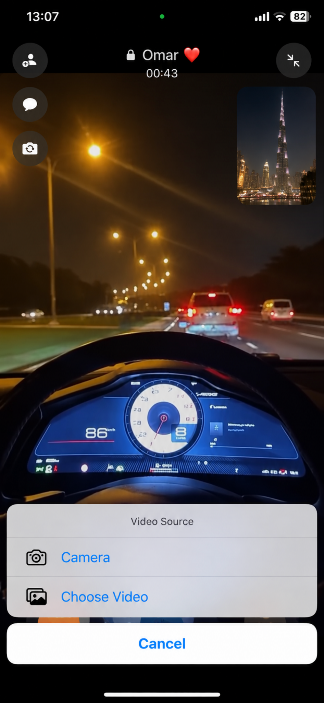
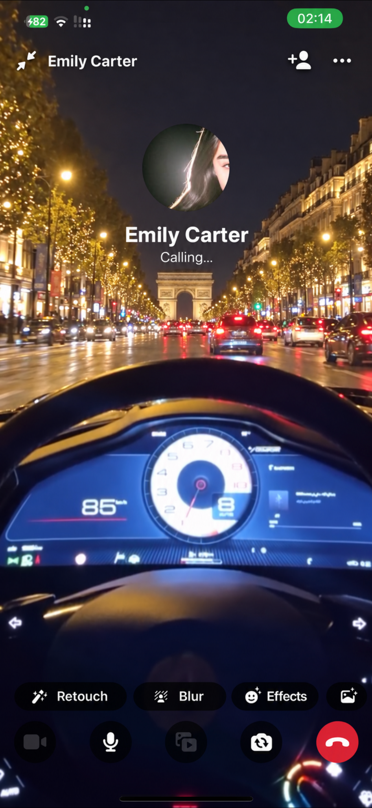

System-Wide Virtual Camera
Select prerecorded videos or pictures as an alternate camera feed for compatible applications.
System-Wide Virtual Camera. Bring your own videos and pictures into supported camera experiences.
Select prerecorded videos or pictures as an alternate camera feed for compatible applications.
Use chosen videos in supported live-streaming flows on social media platforms.
Use an alternate camera source in compatible Safari and Google Chrome browser camera interfaces.
Select images or videos for compatible browser camera interfaces, including camera-based forms on KFS. Identity services may require genuine live capture.
Choose a saved photo as the image returned in compatible camera-photo workflows, including privacy and app testing.
Switch to a selected video during video calls in supported applications.
Change between the real camera, a prerecorded video and a chosen picture.
Built for compatible jailbroken iPhones using a rootless setup.
Use a selected video in compatible live-streaming and camera applications.


Switch between a live feed, video or picture in supported camera interfaces.
Use chosen media in compatible camera capture flows.

Safari and Google Chrome camera workflows are supported where compatible with the tweak. The browser panels below are illustrations, not verified screenshots of the tweak operating in those browsers.

Camera source substitution for compatible video-call and streaming apps.
Use library videos during compatible live streaming sessions.
Illustration of a camera input request on a KFS page.
MagicCam can offer a selected image or video as a camera source where supported.
MagicCam أداة لتحويل كاميرا الآيفون إلى مصدر افتراضي على مستوى النظام، تتيح اختيار فيديو أو صورة من الألبوم داخل التطبيقات والمواقع المتوافقة.
اختيار فيديو أو صورة محفوظة كمصدر بديل للكاميرا في التطبيقات المتوافقة.
استخدام فيديوهات من الألبوم أثناء البث المباشر في منصات التواصل المدعومة.
استخدام مصدر الكاميرا الافتراضية داخل واجهات التصوير المتوافقة في Safari وGoogle Chrome.
اختيار صور أو فيديوهات في واجهات التصوير المتوافقة، بما فيها النماذج التي تستخدم الكاميرا في موقع KFS.
اختيار صورة من الألبوم لتُستخدم في طلبات التقاط الصور المتوافقة، للخصوصية واختبار التطبيقات.
عرض فيديو مختار في مكالمات الفيديو لدى التطبيقات المدعومة.
الانتقال بين الكاميرا الأصلية والفيديو المسجل والصورة المختارة.
مصممة لأجهزة الآيفون التي تدعم جيلبريك Rootless.